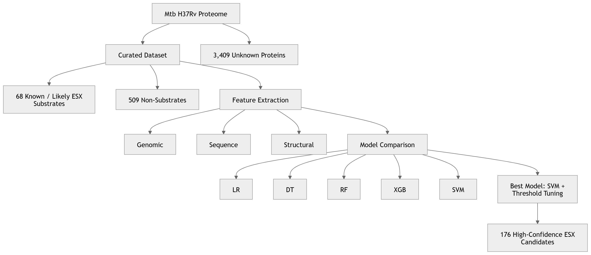

Predicting Hidden ESX Substrates in Mycobacterium tuberculosis

For my master’s thesis in Bioinformatics at UHasselt and the Institute of Tropical Medicine Antwerp, I explored a question at the intersection of machine learning, structural biology, and infectious disease:
Can we computationally predict previously unknown Type VII Secretion System (T7SS / ESX) protein substrates in Mycobacterium tuberculosis (Mtb)?
Tuberculosis remains one of the world’s deadliest infectious diseases, and M. tuberculosis owes much of its success to specialized virulence systems that help it evade host immunity. One of the most important is the Type VII Secretion System (T7SS or ESX), which exports proteins that manipulate host-pathogen interactions.
Many known ESX substrates, such as EsxA/ESAT-6, are central to virulence and vaccine development. But a major challenge remains: many ESX substrates are still unknown.
Identifying them experimentally is slow and resource-intensive, so I investigated whether machine learning could help prioritize likely candidates for future validation.
Rather than relying on sequence motifs alone, I built a predictive framework that integrates three biological information layers:
This multi-layered approach reflects an important biological reality: protein function is not determined by sequence alone — structure and genomic context matter.
I curated:
I then compared five machine learning models:
Because ESX substrates are rare, class imbalance was a major challenge. I tested:
Best model: Support Vector Machine (SVM) + Decision Threshold Calibration
Performance: F1-score: 0.992, Precision: >0.999, Recall: 0.985
This means the model was highly effective at identifying ESX substrates while minimizing false positives.
One of the most exciting findings was that structural and genomic features outperformed sequence-only features.
Top predictors included:
This suggests that hidden ESX substrates may preserve functional architecture even when sequence similarity is weak, making structural bioinformatics especially powerful for pathogen discovery.
Applying the optimized model across the Mtb proteome identified 176 high-confidence candidate ESX substrates, including PE/PPE family proteins, WXG100-like proteins, and 36 previously uncharacterized proteins.
These candidates now represent potential starting points for wet lab validation, virulence studies, vaccine target exploration, and therapeutic discovery.
This thesis reinforced something I deeply value as a bioinformatician: machine learning becomes most powerful when grounded in biological context.
By combining genomics, sequence analysis, structural biology, and predictive modeling, computational research can help accelerate discoveries against diseases like tuberculosis.
This project was more than a classification problem. It was my first major step toward bridging statistics + machine learning + molecular biology + global health.
As someone coming from a statistical and data science background, this work strengthened my goal of contributing to infectious disease research through computational biology.